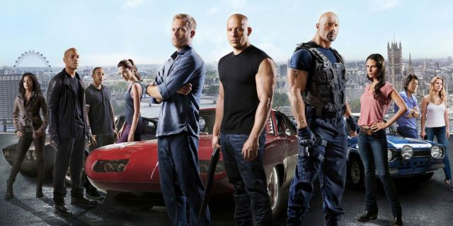
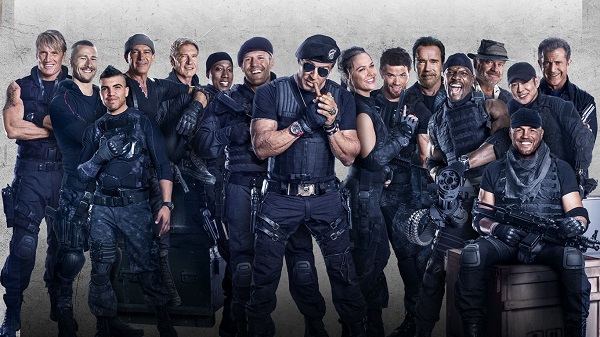
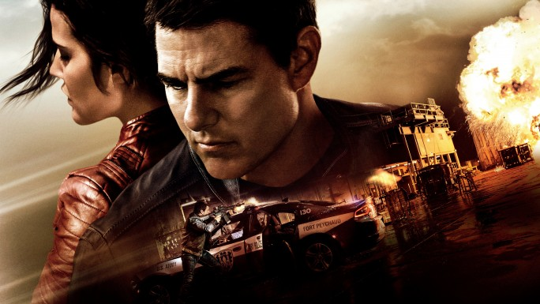
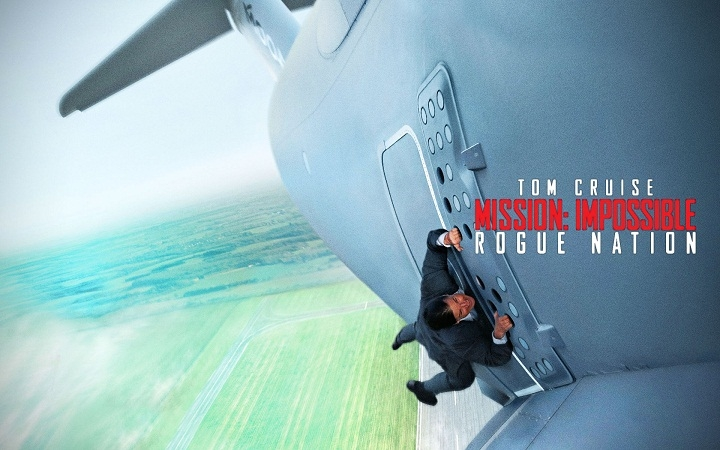

Ничто не истина - все дозволено
-Хасана ибн Саббаха
Андрей Чесноков
Меня зовут Андрей. Родился в 2001 году в городе Йошкар-ола. До того как пришел в лицей "Инфотех", я учился в лицее им. М. В. Ломоносова.
Мое хобби
Большую часть свободного времени у меня уходит на спорт.Я с детства был спортивным и щас пытаюсь оставаться в этой форме.
Напиши мне →

Форсаж 1-8
Главный герой — полицейский под прикрытием Брайан О’Коннер (Уокер, Пол). Его цель — быть принятым в автобанду легендарного уличного гонщика Доминика Торетто (Вин Дизель), которого подозревают в налётах на грузовики с бытовой техникой.Фильм собирает вместе главных героев первого фильма: полицейского Брайана (Пол Уокер) и семью Доминика Торетто (Вин Дизель) — сестру Мию (Джордана Брюстер) и его девушку Летти (Мишель Родригес). В этот раз Доминику и Брайану придётся поработать вместе — им предстоит втереться в доверие к известному наркобарону по имени Артуро Брага (Джон Ортис). У каждого из героев свой резон, чтобы наказать злодея.После того, как команда отчаянных гонщиков под предводительством Доминика Торетто (Вин Дизель) уничтожила преступную банду Оуэна Шоу (Люк Эванс) и вызволила из его цепких рук подружку Доминика Летти (Мишель Родригес), родной брат Оуэна, Деккард Шоу (Джейсон Стэтхэм), мечтает отомстить.

Неудержимые 1-3
Главные герои фильма — группа элитных наёмников, выполняющих самые разнообразные задания — от спасения заложников, до свержения диктаторов. Некто «Храм» нанимает их для ликвидации генерала Гарзы — правителя небольшого острова Вилена, расположенного между Мексиканским заливом и Южной Америкой.Отряд «Неудержимые», состоящий из его лидера Барни Росса, эксперта по холодному оружию Ли Кристмаса, мастера рукопашного боя Инь Яна, психически неуравновешенного инженера-химика Гуннара Йенсена, специалиста по тяжёлому оружию Хэйла Цезаря, эксперта-подрывника Толла Роуда, а также новичка, снайпера Билли Тиммонса по прозвищу «Малыш», прибывает в Непал для выполнения очередной спецоперации, целью которой является спасение китайского бизнесмена. В ходе неё им также удаётся освободить Тренча, давнего приятеля-соперника Барни, провалившего ту же миссию.

Джек Ричер 2
Джек Ричер решил взять передышку и вернуться в родное 110-е подразделение военной полиции, где он когда-то был начальником. Тем более у него есть дополнительный интерес — действующий командир части, майор Сьюзан Тернер. Именно майор Тернер выручила его, сообщая своим волнующим голосом по телефону ценную информацию, которая помогла Джеку Ричеру выпутаться из серьезных неприятностей. И вот теперь у него есть возможность поблагодарить коллегу лично. Вот только оказавшись в расположении части, Ричер узнает, что буквально на днях Сьюзан арестовали за получение крупной взятки. А его самого обвинили в убийстве шестнадцатилетней давности, о событиях которого он ничего не помнит. Странное совпадение или чей-то злой умысел? Возвращение в место, где когда-то было хорошо и относительно спокойно, оборачивается новыми неприятностями и приключениями.

Миссия невыполнима 5
Когда ОМН распускают, и Итан Хант остается не у дел, его команда неожиданно сталкивается с разветвленной международной сетью высокопрофессиональных спецагентов — Синдикатом. Это «племя изгоев» одержимо идеей установления нового мирового порядка и планирует серию разрушительных терактов. Итан и компания объединяются с дискредитированным британским агентом Илсой Фауст и приступают к своей самой невыполнимой миссии, понимая, что каждый из них может оказаться на стороне Синдиката.